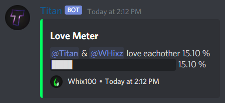

<!doctype html>
<html lang="en-US">
<head>
	<link rel="shortcut icon" type="image/png" href="/Assets/Pictures/1024px_Whix100_Foxtail_Color_Solid.png">
    <title>Titan | Whix100</title>
    <link href="https://fonts.googleapis.com/icon?family=Material+Icons" rel="stylesheet">
	<link rel="stylesheet" type="text/css" href="/Assets/Styles/style.css">
	<meta charset="UTF-8">
	<meta name="description" content="The site for all things Whix100. Here you can find anything related to Whix100 including videos and mods made by Whix100.">
	<meta name="keywords" content="Whix100, Fractured Shell Studios, Infinity Programming, Titan, TitanBot, Discord, Bot">
	<meta name="author" content="Whix100">
    <meta name="viewport" content="width=device-width, initial-scale=1.0">
    <script data-ad-client="ca-pub-7994336868362017" async src="https://pagead2.googlesyndication.com/pagead/js/adsbygoogle.js"></script>
</head>
<script src="https://www.w3schools.com/lib/w3.js"></script>
<script src="/Assets/Scripts/gallery.js"></script>
<!--style>
    .sidebar {
        display: inline-block;
        margin: 1%;
        padding: 0.5%;
        border-radius: 0.5em;
        background: var(--surface);
        width: 15%;
        min-height: 50%;
    }

    .content-page {
        padding: 2%;
        border-radius: 0.5em;
        background: var(--surface);
    }

    h3 { padding: 0px; }

    h4 { text-align: left; }

    li h4 {
        font-size: 1.25em;
        text-align: left;
        padding: 0em;
        font-weight: normal;
        cursor: pointer;
    }

    li h4:hover { color: var(--primary); }

    .command {
        background-color: var(--background);
        border-radius: 0.2em;
        padding: 0.2em;
    }

    ul li { display: block; }
    ul li ul li { display: list-item; }
    ul { padding-left: 1em; }

    .gallery {
        margin: 1%;
        padding: 0px;
        float: right;
        width: 80%;
        margin-left: 0px;
    }

    li a, p a {
        color: white;
        text-decoration: none;
    }

    li a:hover {
        text-decoration: underline;
    }
</style-->
<body>
    <!--Header-->
	<div w3-include-html="/header.html"></div>
	<!--Body-->
    <meta http-equiv="refresh" content="0; URL=/TitanDocs" />
	<!--div class="content">
        <h2>TitanBot</h2>
        TitanBot is a multipurpose Discord bot.
        Below are the options and features that Titan has and that the bot has or will have in the short future.
        New features may become available fairly regularly as they are added to the bot.
        During upgrades, the bot will temporarily be offline, but it should only last a few minutes.
        Invite TitanBot to your server by clicking <a href="/r/titan.html">here</a>.
        If you want to report a bug, click <a href="/r/titanbug.html">here</a>.
    </div>
    <div class="content">
        <div class="sidebar">
            <ul>
                <li class="collapsible"><h4>Support</h4></li>
                <li><ul onclick="currentDiv(1)">
                    <li><a href="#help">Help</a></li>
                    <li><a href="#bug-report">Bug Report</a></li>
                    <li><a href="#bot-info">Bot Info</a></li>
                </ul></li>
                <li class="collapsible"><h4>Moderation</h4></li>
                <li><ul onclick="currentDiv(2)">
                    <li><a href="#user-moderation">User Moderation</a></li>
                    <li><a href="#message-moderation">Message Moderation</a></li>
                    <li><a href="#user-server-info">User/Server Info</a></li>
                </ul></li>
                <li class="collapsible"><h4>Configs</h4></li>
                <li><ul onclick="currentDiv(3)">
                    <li><a href="#config-show-remove">Show/Remove</a></li>
                    <li><a href="#user-config">User Configs</a></li>
                    <li><a href="#server-config">Server Configs</a></li>
                </ul></li>
                <li class="collapsible"><h4>Announcements</h4></li>
                <li><ul onclick="currentDiv(4)">
                    <li><a href="#user-events">User Events</a></li>
                    <li><a href="#automod">Automod</a></li>
                    <li><a href="#bot-updates">Bot Updates</a></li>
                </ul></li>
                <li class="collapsible"><h4>Fun & Games</h4></li>
                <li><ul onclick="currentDiv(5)">
                    <li><a href="#dice">Dice Roll</a></li>
                    <li><a href="#coin">Coin Flip</a></li>
                    <li><a href="#math">Solve Math</a></li>
                    <li><a href="#8ball">Magic 8 Ball</a></li>
                    <li><a href="#joke">Tell A Joke</a></li>
                    <li><a href="#love">Love Meter</a></li>
                </ul></li>
            </ul>
        </div>
        <div class="gallery">
        <div id="support-page" class="content-page slide">
            <h3>Support</h3>
            <p>
                <h4><a id="help">Help</a></h4>
                The help command can be useful if you don't know the available commands, how to use a command, or what a command does.<br>
                <span class="command">t!help</span>: Gives a list of available commands. The list will only show the commands that are available in the guild/DM that you're currently in.<br>
                <span class="command">t!help &lt;command&gt;</span>: Gives a list of all commands that are similar to the command you inputed and descriptions for the listed commands.
                
                <h4><a id="bug-report">Bug Report</a></h4>
                <span class="command">t!bug</span>: Gives a link to the TitanBot bug report form. You can click the link above to go to the bug report submission form.
                <h4><a id="bot-info">Bot Info</a></h4>
                These commands can be used to get different kinds of useful information about TitanBot.<br>
                <span class="command">t!about</span>: Sends a message that provides a dscription of TitanBot, the current version, and more information.<br>
                <span class="command">t!changelog</span>: Gives a list of all commands that are similar to the command you inputed and descriptions for the listed commands.<br>
                <span class="command">t!uptime</span>: Sends a message that has uptime information like how long the bot has been running, and what percentage of time the bot is running.<br>
                <span class="command">t!status</span>: Sends a message with information about the bot like, some uptime information, how much memory is being used, and the bot's current version.<br>
                <span class="command">t!invite</span>: DMs a message with the invite link for TitanBot.<br>
                <span class="command">t!donate</span>: DMs a message with the link for donating to the TitanBot developement team.<br>
                
                
            </p>
        </div>
        <div id="moderation-page" class="content-page slide">
            <h3>Moderation</h3>
            <p>
                <h4><a id="user-moderation">User Moderation</a></h4>
                There are multiple user moderation features provited by this bot including a kick command and a ban command.<br>
                <span class="command">t!kick &lt;user&gt; &lt;reason&gt;</span>: Kicks the given user with the given reason.<br>
                <span class="command">t!ban &lt;user&gt; &lt;reason&gt;</span>: Bans the given user with the given reason.
                <h4><a id="message-moderation">Message Moderation</a></h4>
                TitanBot can automatically delete messages based on different criteria like muted users or blacklisted terms.<br>
                <span class="command">t!mute &lt;user&gt;</span>: Gives the user the muted role, telling the bot to delete message from them when sent. The muted role can be specified with the config command.<br>
                <span class="command">t!unmute &lt;user&gt;</span>: Removes the muted role from the user, allowing them to send messages again.<br>
                <span class="command">t!blacklist &lt;term&gt;</span>: Adds the given term to the blacklist. Any messages containing that term will be deleted. The config command can be used to set the channel for announcements of deleted messages to be sent in.
                <h4><a id="user-server-info">User/Server Info</a></h4>
                Get information about a user or server.
                <span class="command">t!userinfo &lt;user&gt;</span>: Get information about the given user, including account creation date, status, and more.
                <span class="command">t!guildinfo</span>: Get information about the current server.
            </p>
        </div>
        <div id="user-page" class="content-page slide">
            <h3>Configs</h3>
            <p>
                <h4><a id="config-show-remove">Show/Remove</a></h4>
                <span class="command">t!config</span>: Shows the values for the user's or server's configs.<br>
                <span class="command">t!config remove &lt;setting&gt;</span>: Sets the given config to its default value.
                <h4><a id="user-config">User Configs</a></h4>
                There are a few user configuration options available. The config command must be used in DMs in order to change the user configs.<br>
                <span class="command">t!config color &lt;hexcode&gt;</span>: Sets the color that is used for embed message responses from the bot in DMs or when a server doesn't have a specified color. Default value is #000000.<br>
                <span class="command">t!config can_mention &lt;true/false&gt;</span>: Sets if the bot is allowed to mention the user in messages. Default value is true.<br>
                <span class="command">t!config can_message &lt;true/false&gt;</span>: Sets if the bot is allowed to DM the user in response to certain commands. Default value is true.
                
                <h4><a id="server-config">Server Configs</a></h4>
                There are many options for server config customization. The config command must be used in a server to change its configs.<br>
                <span class="command">t!config prefix &lt;prefix&gt;</span>: Sets the command prefix that is used in the current server. Default value is '!t'.<br>
                <span class="command">t!config color &lt;hexcode&gt;</span>: Sets the color that is used for embed message responses from the bot in the current server. Default value is #000000.<br>
                <span class="command">t!config admin_role &lt;role&gt;</span>: Sets the role for the server that can use config and moderation commands. Default: None<br>
                <span class="command">t!config muted_role &lt;role&gt;</span>: Sets the role that gets assigned to users who are muted. Default: None<br>
                <span class="command">t!config welcome_chan &lt;channel&gt;</span>: Sets the channel for user joined messages to be sent in. Default: None<br>
                <span class="command">t!config goodbye_chan &lt;channel&gt;</span>: Sets the channel for user left messages to be sent in. Default: None<br>
                <span class="command">t!config muted_chan &lt;channel&gt;</span>: Sets the channel for an announcement to be sent in when a user is muted. Default: None<br>
                <span class="command">t!config banned_chan &lt;channel&gt;</span>: Sets the channel for an announcement to be sent in when a user is banned. Default: None<br>
                <span class="command">t!config announcements_chan &lt;channel&gt;</span>: Sets the channel for an announcement to be sent in when the bot updates or important bot information is released. Default: None<br>
                <span class="command">t!config blacklist_chan &lt;channel&gt;</span>: Sets the channel for an announcement to be sent in when a user's message is deleted because it contains a blacklisted term. Default: None<br>
                
            </p>
        </div>
        <div id="server-page" class="content-page slide">
            <h3>Announcements</h3>
            <p>
                There are many announcements the bot can send for different events. Check out the Server Configs section to learn how to setup these announcements.
                <h4><a id="user-events">User Events</a></h4>
                These announcements get triggered when a user does something or when something happens to a user.
                <h4><a id="automod">Automod</a></h4>
                An announcement will be sent when a message containing a blacklisted term gets sent and deleted.
                <h4><a id="bot-updates">Bot Updates</a></h4>
                A message will be sent every time the bot gets updated or when there's new important information available about the bot.
            </p>
        </div>
        <div id="server-page" class="content-page slide">
            <h3>Fun & Games</h3>
            <p>
                TitanBot has many fun and wacky commands available.<br>
                <a id="dice"><span class="command">t!roll &lt;expression&gt;</span></a>: Generates a random number based on the expression provided. Supports (), d, ^, *, /, !, %, +, and -. TitanBot also follows the rules of PEMDAS.<br>
                <a id="coin"><span class="command">t!coin</span></a>: Randomly returns the value of Heads or Tails.<br>
                <a id="math"><span class="command">t!math &lt;expression&gt;</span></a>: Solves the provided expression. Supports (), d, ^, *, /, !, %, +, and -. TitanBot also follows the rules of PEMDAS.<br>
                <a id="8ball"><span class="command">t!8ball &lt;question&gt;</span></a>: Responds with a random magic 8 ball response. (Does not require a question.)<br>
                <a id="joke"><span class="command">t!joke</span>: Responds with a random joke from a list.<br>
                <a id="love"><span class="command">t!love &lt;user&gt; &lt;user&gt;</span></a>: Sends a love meter showing how much two users love each other. (Uses a randomly generated number.)<br>
                
            </p>
        </div>
        </div-->
    </div>
	<!--Footer-->
	<div w3-include-html="/footer.html"></div>
	<script>
        w3.includeHTML();

        /*var coll = document.getElementsByClassName("collapsible");
        var i;

        for (i = 0; i < coll.length; i++) {
            coll[i].addEventListener("click", function() {
                this.classList.toggle("active");
                var content = this.nextElementSibling;
                if (content.style.display !== "none") {
                    content.style.display = "none";
                } else {
                    content.style.display = "block";
                }
            });
        }

        var slideIndex = 1;
        showDivs(slideIndex);*/
	</script>
</body>
</html>